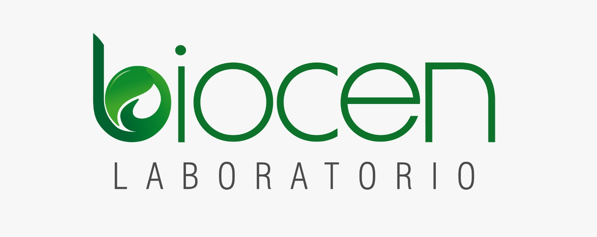

Fabricamos coadyuvantes agrícolas de alta eficiencia para optimizar cada pulverización y proteger el entorno natural.

Análisis agronómicos de agua y semillas con precisión científica, para decisiones de campo basadas en datos reales.
Nuestra Línea Domo
Productos diseñados para cada tipo de necesidad y calidad de agua.
Domo Control
Secuestrante e HidratanteMáximo control sobre la calidad del agua de pulverización.
- Alcoholes grasos etoxilados: 17 g/100 g
- Agentes acidificantes: 50 g/100 g
- Agua y aditivos inertes c.s.p. 100 g
Domo Oleum
Anti-evaporante y PenetranteProtección oleosa para una dispersión homogénea.
- Aceite vegetal metilado (soja): 88.2 g/100 ml
- Emulsificantes y tensioactivos c.s.p. 100 ml
- Clasificación toxicológica: Clase IV (Banda Verde)
Domo Max
Activador y AcondicionadorSinergia de nitrógeno y azufre para optimizar herbicidas.
- Sulfato de amonio: 38 g/100 g
- Nutrientes: Nitrógeno y Azufre solubles
- Agua y aditivos inertes c.s.p. 100 g
Domo Humecto
Tensioactivo HumectanteAdherencia superior que evita el desperdicio foliar.
- Alcoholes grasos etoxilados: 30 g/100 g
- Vehículo humectante e inertes c.s.p. 100 g
Servicios Analíticos
Dos pilares fundamentales para proteger tu inversión en insumos.
Análisis de Agua para Pulverización
El agua representa más del 90% del caldo de aplicación. Medimos las variables críticas que afectan la efectividad química.
- Determinación de Dureza Total (CaCO3)
- Medición de pH y conductividad eléctrica
- Medición de Sólidos Totales Disueltos (TDS)
- Curvas de dosificación a medida con Domo Max y Domo Control
Análisis de Calidad de Semillas
Asegura la implantación y evita fallas de stand en tus lotes analizando la viabilidad biológica previa.
- Poder Germinativo (PG) en cámara
- Energía Germinativa (EG)
- Humedad interna de la semilla
- Pureza física y Peso de Mil Semillas (PMS)
Simulador de Corrección de Agua
Calcula de forma automática la dosis requerida de coadyuvantes en base a los parámetros de dureza y pH de tu pozo.
Reporte de Dosificación Recomendado
Nuestra Trayectoria
Desde nuestros inicios en Arroyito, Córdoba, concebimos la fortaleza corporativa a través del trabajo codo a codo con el productor agropecuario. Nos esforzamos diariamente por aportar soluciones químicas y analíticas viables y efectivas.
Nuestras actividades y decisiones de negocio se fundamentan en la Responsabilidad Social Empresaria, garantizando productos eficaces y sustentables que protegen los recursos naturales y humanos de cada región productiva.
Misión
Elevar la productividad agroindustrial aplicando ciencia y tecnología para un desarrollo agrícola sustentable, cuidando el entorno humano y ambiental.
Visión
Para el año 2026, ser el referente de innovación y calidad en servicios agrícolas de la región central del país, impulsando la toma de decisiones basada en datos químicos y biológicos.
Alianzas Estratégicas
Trabajamos en conjunto para brindar soporte integral al productor.
ZANOY Agro
Centro de Servicio Monsanto y representante de Dekalb.
BERTONE Maquinarias
Concesionario oficial Massey Ferguson con más de 45 años.
MAXIMA PLUS
Venta de semillas, fitosanitarios y fertilizantes de alta calidad.
Información de Contacto
Puedes visitarnos o llamarnos directamente para acordar la entrega de muestras al laboratorio.
-
Dirección:
Av. Marcial Vaudagna 154, Arroyito, Córdoba, Argentina. -
Teléfono:
03576 - 452555 -
Correo Electrónico:
laboratorio@biocen.com.ar